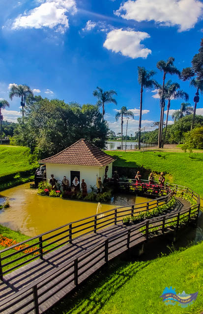
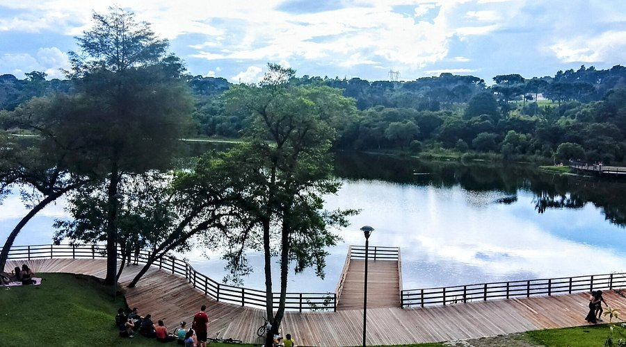
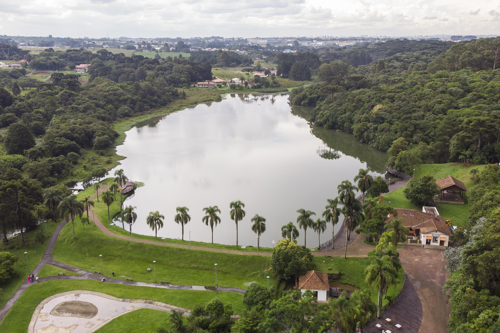

BEM VINDO AO MEU SITE
neste site vou apresentar as curiosidades sobre o parque lago azul

contexto historico
O Parque Municipal Lago Azul surgiu na década de 1930, quando o imigrante italiano Ângelo Segalla represou o Rio Ponta Grossa para movimentar um moinho de milho. O lago artificial foi criado para auxiliar nas atividades agricolas da região.com o tempo, o local tornou-se um parque particular muito frequentado por familiares para lazer e pescaria.em 2008, a prefeitura de curitiba transformou a área em parque mubicipal. o parque preserva construções historicas, como o antigo moinho, e protege a natureza local.atualmente, e um importante espaço de lazer, preservação ambiental e valorização da historia de curitiba.

o parque lago azul
Com o passar dos anos, o local também se tornou um espaço de lazer.principalmente entre as decadas 1960 e 1980, muitas familias visitavam essa propriedade para fazer uns piqueniques, para pescar e para aproveitar o contato com a natureza.
